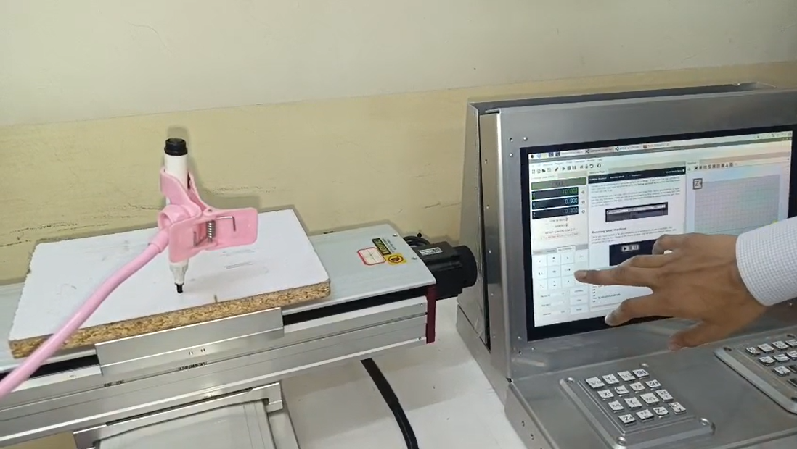

Powered by STM32 • Raspberry Pi • Arduino • AI & Safety
This project presents a hybrid CNC controller integrating STM32F446RE, Raspberry Pi 4B, and Arduino. It supports touchscreen UGS control, manual button panel, Bluetooth App, and AI interaction. Safety is enhanced with EESX-674 limit switches and gesture/voice-based Emergency Stop. Designed for affordability, flexibility, and accessibility in education and small industry.
Problem Statement: Traditional CNC controllers are expensive, closed-source, and complex. They lack flexible interfaces and affordability for small-scale users, hobbyists, and educational institutions.
Objective: Create a hybrid control system combining physical interfaces with intelligent GUI and AI for a smarter, safer, and more customizable CNC experience.
Additional Work: Deployed TinyLLaMA chatbot locally on Raspberry Pi (3.71GB RAM, 16GB SD card). Emergency Stop system includes landmark-based 10-finger detection using OpenCV, and voice control via mic input with relay cutoff signal.
Need help understanding G-code, setup, or CNC troubleshooting? Our embedded AI chatbot is here to assist you:
We offer custom-built CNC kits with various control panel options. Reach out for quotes and orders:
Contact: hybridcncgroup@gmail.com